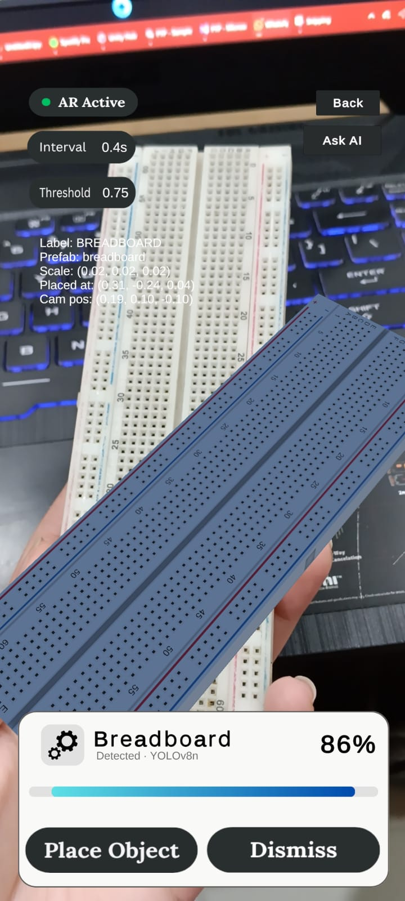
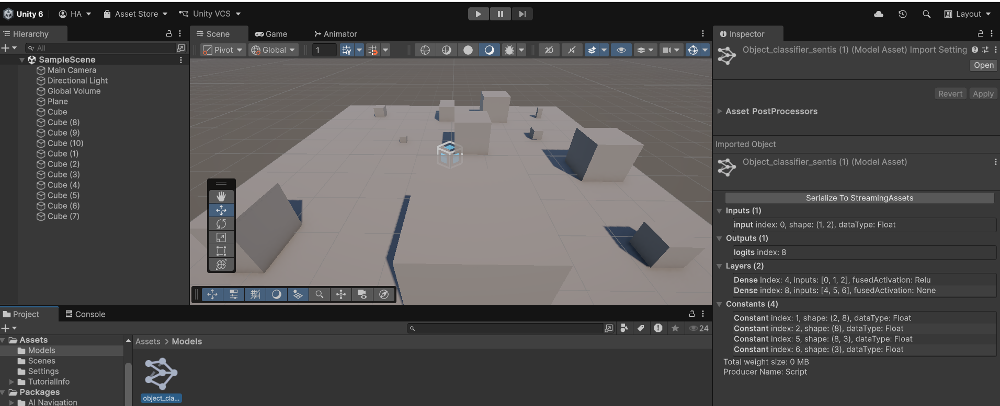

// HCI · GAME AI
RESEARCH & ENGINEERING
Hoorish
Ahmad
Researcher & Engineer — HCI, Game AI & ML systems for interactive experiences.
Computer Systems Engineering graduate from University of Engineering and Technology Peshawar (CGPA 3.73). I sit at the intersection of AI and interactive media — researching procedural content generation via reinforcement learning, building intelligent game agents, and deploying ML models inside real-time AR and game environments. Currently an AI Intern at Welltime Ltd (UK) and Research Assistant under Engr. Abdullah Hamid. Pursuing research-based graduate study in HCI, Game AI, or AIGC abroad.
Selected engineering work · 01–03
Intelligence built into the game loop.
Three projects that apply ML and AI research to interactive systems — from on-device inference in AR to LLM-driven narrative and deep RL for level generation.
// Final Year Project · Computer Vision · Edge Deployment
Real-Time Object Recognition in AR
github.com/hoorishahmad · Unity · Python · ONNX · Unity Sentis · C#

Problem & Objective
Run object detection live on the device camera inside an AR scene and augment recognized objects on the fly — entirely offline, no inference server. Target: a usable real-time experience on a mid-range Android phone.
Architecture & Pipeline
Train in PyTorch → export to ONNX → load & run in-engine with Unity Sentis at runtime. Benchmarked four detector backbones to find the accuracy/latency sweet spot for a constrained device.
Metrics & Performance
Engineering Challenge
- Trading accuracy against latency across four architectures for a real-time, memory-limited target.
- Reconciling ONNX export quirks so models load and run correctly inside Sentis.
- Keeping detection stable as the AR camera pose and lighting shift frame to frame.
// HCI · LLM Systems · Interactive Narrative
Ironveil Depths — LLM-Powered AI Game Master
github.com/hoorishahmad/ironveil-depths · JavaScript · HTML/CSS · OpenRouter API
Problem & Objective
Build a browser text-RPG where an LLM plays the Game Master — maintaining narrative coherence, in-character voice, and live game-state simultaneously. A direct HCI question: can an LLM sustain believable, stateful interaction over many turns?
Architecture & Pipeline
The model stays in character as GM while emitting valid JSON at the end of every response so the UI can update health, inventory, gold, and location live. Full conversation history sent on every API call — state management entirely through prompt design.
Metrics & Performance
Research Relevance
- Direct application of HCI principles — designing the interaction model so users stay immersed despite knowing they're talking to an LLM.
- Getting consistent dual-mode output (narrative prose + structured JSON) required significant prompt iteration — a core prompt engineering challenge.
- Demonstrates LLM-driven dynamic narrative, a key topic in AI for games research.
// Game AI · Agent Behaviour · Unity
Dorm Escape — AI Enemy System
github.com/hoorishahmad/dorm-escape · Unity · C# · Game AI

Problem & Objective
Design an NPC enemy AI that feels genuinely threatening — guards that patrol intelligently, detect the player through field-of-view checks, and escalate behaviour dynamically. Ship it as a complete playable stealth game.
Architecture & Pipeline
Finite state machine written from scratch in C#: patrol → alert → chase driven by FoV ray-casting and proximity triggers. Shipped a complete 3D game with stealth mechanics, collectibles, scene transitions, and animated UI.
Metrics & Performance
Research Relevance
- Classic game AI problem — believable NPC behaviour without over-scripting or expensive planning algorithms.
- FoV-based detection models a key perceptual primitive studied in agent behaviour research.
- State machine architecture maps directly to topics in autonomous agents and interactive AI literature.
Supporting work
Archive
Trained a neural network, exported to ONNX, and loaded it inside a running Unity scene via Sentis for live inference — a prototype for how an NPC might perceive its environment without a server.
Unity · ONNX · Sentis · C# →From-scratch Transformer with positional encoding and multi-head attention to forecast gold prices — explicit guard against data leakage, evaluated against LSTM baseline.
PyTorch · NumPy · Pandas →Full NLP pipeline from raw text to predictions — tokenization, stopword removal, vectorization, 3-class sentiment classifier.
Python · scikit-learn →3D exploration game — player navigation, environment interaction, dynamic object spawning, and game-state management built in Unity.
Unity · C# →Multi-layer ANN for digit recognition + regression ANN on California Housing — architecture tuning, loss curves, confusion matrices.
Python · scikit-learn · NumPyMultithreaded Sudoku solver (pthreads + mutex) and a socket-based multiplayer Tic-Tac-Toe server — concurrency and networking from scratch.
C · POSIX Threads · SocketsCapability matrix
Tech stack
Grouped by what it's for. Everything here is something I've actually shipped or trained with.
AI ML & Deep Learning
GD Game AI & Interactive Systems
IO Inference & Deployment
LG Languages & Core Tools
→ Currently learning / roadmap
Research & academic work
Where I want to go deeper.
I sit at the intersection of HCI, Game AI, and generative systems. My core question: how do we build AI that makes interactive experiences more intelligent, adaptive, and human-centred? That spans procedural content generation, NPC behaviour, LLM-driven narrative, and AR/VR interfaces. Pursuing a research-based MS or PhD abroad in the same space.
Research interests
Relevant coursework & training
Get in touch
Let's build intelligent, human-centred experiences.
Open to research roles, MS/PhD opportunities, and AI/ML engineering positions. Based in Pakistan, working globally.
© 2026 Hoorish Ahmad · built from scratch · no templates harmed